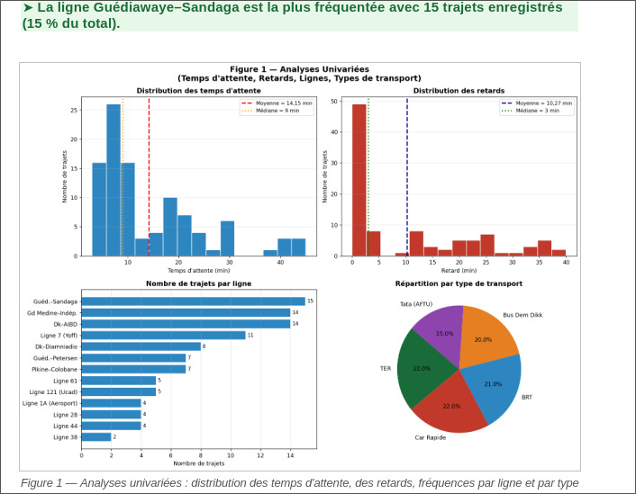
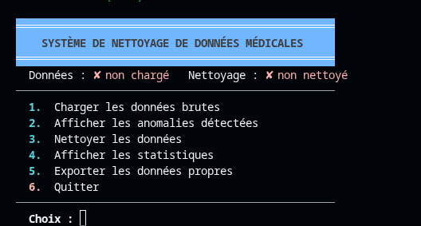
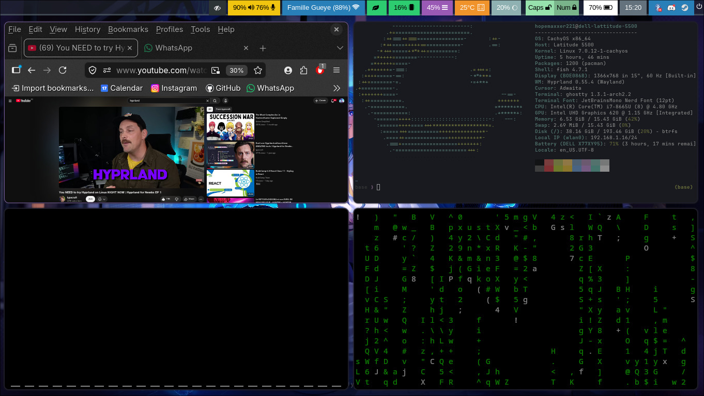

Mes projets
Analyse Transport Urbain
Génération d'un dataset de transport, analyse statistique complète (moyenne, variance, distributions) et présentation des résultats.
Ce projet a été réalisé dans le cadre du cours de Statistiques et Probabilités. Il comprend la génération de données simulées pour le transport urbain à Dakar, le calcul d'indicateurs statistiques (moyenne, médiane, écart-type, quartiles) et la visualisation des tendances. Le rapport final a été présenté en PowerPoint.

Pipeline de nettoyage de données patients
Script Python pur (sans pandas) pour nettoyer, valider et exporter 300 enregistrements de patients depuis un fichier CSV.
Projet de preprocessing médical développé en Python natif. Structure modulaire avec des fichiers séparés pour la lecture, la validation, le nettoyage et l'export. Gestion des valeurs manquantes, des doublons et des formats incorrects (dates, numéros de téléphone, âges hors plage).

Linux CachyOS et Hyprland
Installation de Linux CachyOS et mise en place d'une interface Hyprland
Et voici mon projet préféré!
Je me suis beaucoup intéressé Linux ces derniers temps. Cela m'a donc poussé à me mettre à Mint puis à CachyOS qui sont toutes les deux distributions de Linux. Je recommande vraiment!!
